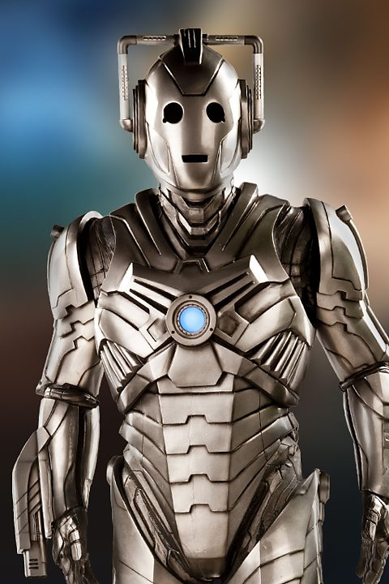
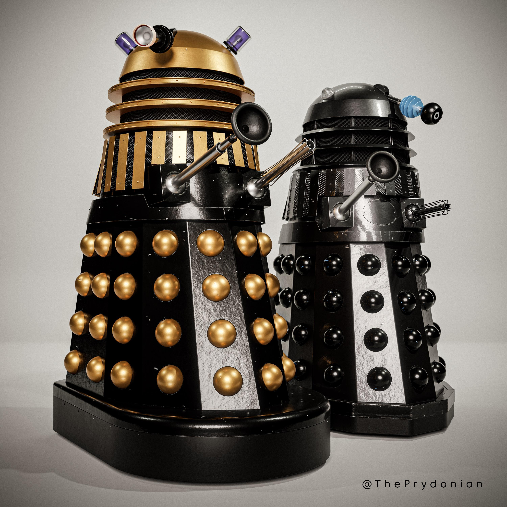
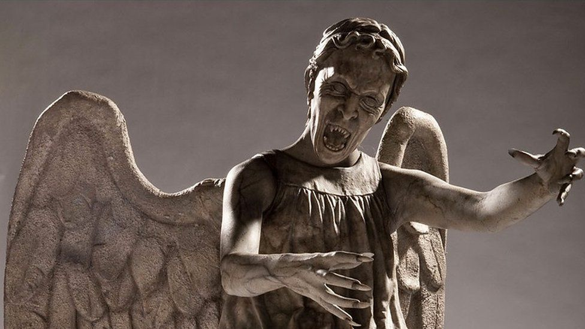
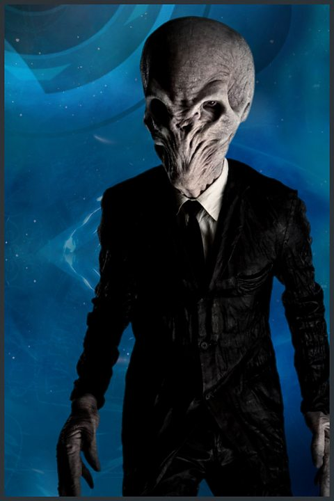
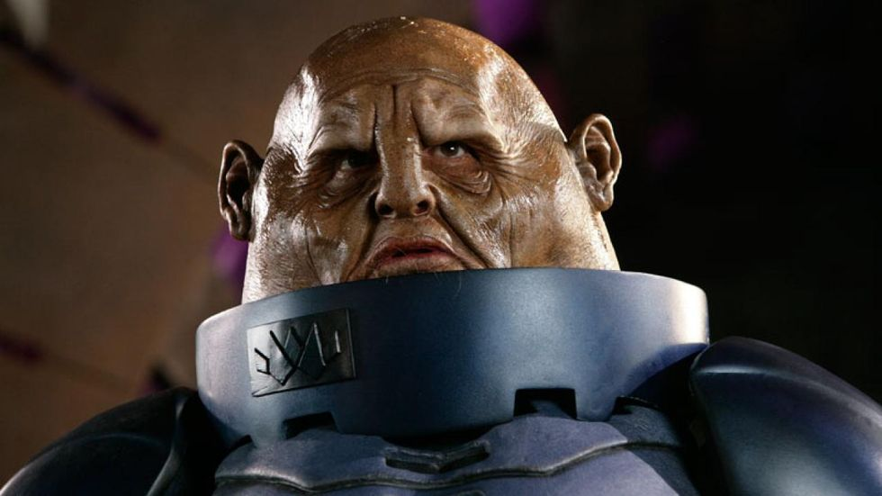

Cybermen
The Cybermen are a race of "upgraded" humans. With metal bodies and a human brain which has had all feeling removed, the Cybermen want to make every living human into one of them, because they beleive their way of being is superior.

Daleks
The Daleks are a race of aliens who have locked themselves away in a near impermeable metal shell. Daleks belive they are superior to every other living thing in the universe and can only feel hatred. Their only goal is to "exterminate" every other living being. Their number one enemy is the Doctor.

The Master
The Master, also known as Missy, is the only living Time Lord other than the Doctor. The Master has a sorded past with the Doctor. They grew up together and then grew apart. The Master went mad somehwere along the way and now only wishes to cause chaos and destruction and ultimately defeat the Doctor.

Weeping Angels
The Weeping Angels are an alien race who are literally inanimate when observed, but come to life when not observed. They move incredibly quickly. If you are touched by a weeping angel, you will be sent back in time far enough that you will have died before you make it back to the time that you were originally sent away from. Don't blink.

The Silence
The Silence is a race of aliens that cannot be rememebered. As soon as you look away from one, you will entirely forget it was ever there.

Sontarans
The Sontarans are a race of aliens from the planet Sontar. Every Sontaran is a clone of every other Sontaran. They are a homogenous people who are highly specialized in the art of war.
